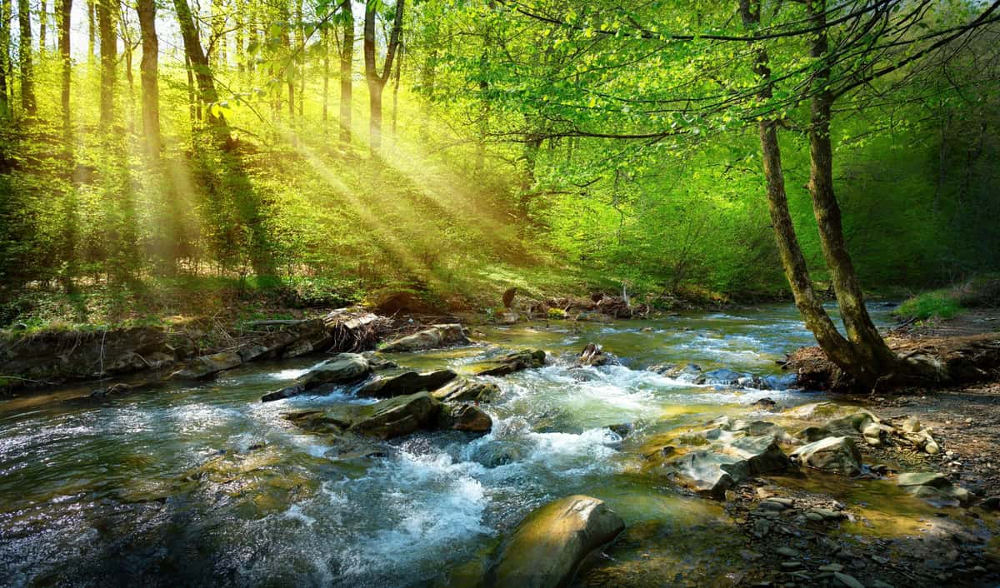
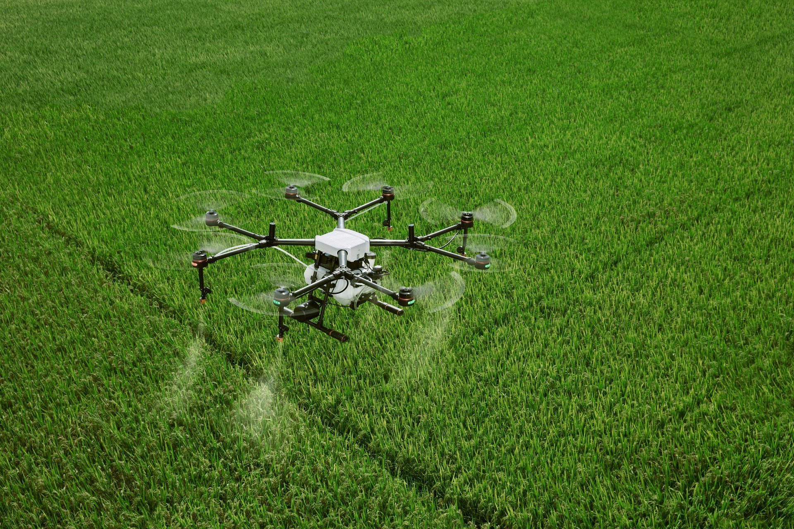

Objetivo do Projeto
O Projeto Agrinho de Programação é uma iniciativa do SENAR que visa despertar o interesse de alunos pela tecnologia, lógica de programação e pensamento computacional. Ele busca aplicar esses conhecimentos na criação de soluções inovadoras relacionadas ao agronegócio e à sustentabilidade.
RECURSOS DO CAMPO
- Aumentar a produção: Máquinas programadas plantam e colhem melhor.
- Economizar recursos: Sensores avisam quando usar água e adubo, protegendo o meio ambiente.
- Monitorar o gado: Acompanhar a saúde dos animais e a localização do rebanho.
- Tomar decisões melhores: Analisar dados para planejar o futuro da fazenda.
- Criar inovações: Desenvolver soluções para os desafios do agronegócio.
- Entrevistas com agricultores e comerciantes urbanos.
Galeria de Imagens


